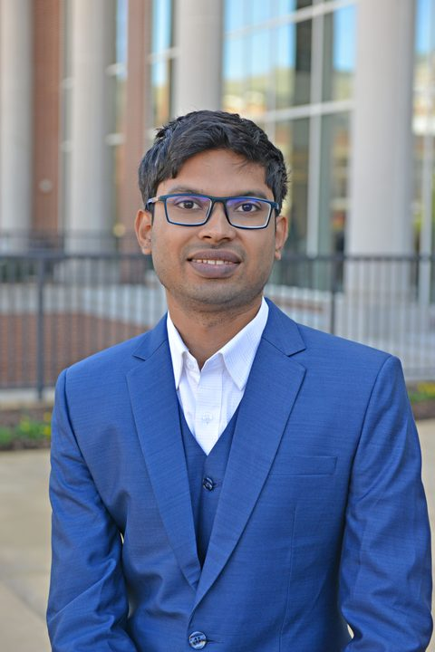

|
 |
Md Kamran Chowdhury ShisherIncoming Assistant ProfessorDepartment of Electrical and Computer Engineering University of Colorado Colorado Springs 1420 Austin Bluffs Pkwy, Colorado Springs, CO 80918 Postdoctoral Researcher Elmore Family School of Electrical and Computer Engineering Purdue University West Lafayette, IN 47907, USA Email: mshisher@uccs.edu, mshisher@purdue.edu Phone: +1-334-275-1413 |
Kamran Shisher is an incoming tenure track assistant professor in the department of Electrical and Computer Engineering at University of Colorado Colorado Springs. He received his PhD in Electrical Engineering from Auburn University at Auburn, Alabama. During his PhD, he worked under the supervision of Prof. Yin Sun. After his PhD, he worked as a postdoctoral researcher at the Elmore Family School of Electrical and Computer Engineering in Purdue University, hosted by Prof. Mung Chiang and Prof. Christopher G. Brinton. He received the IEEE Communications Society William R. Bennett prize (2025) for the paper "Timely Communications for Remote Inference" published in IEEE/ACM Transactions on Networking in 2024. His current research interests are in the area of communication networks, machine learning, and multi-agent control systems.
Visit his Google Scholar profile to view publications.